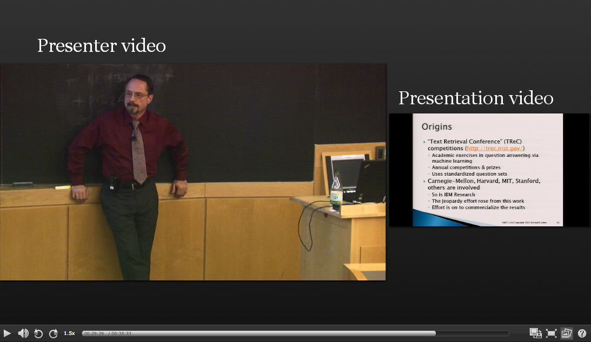
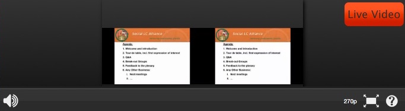
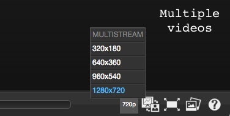
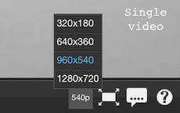
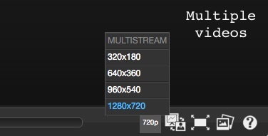
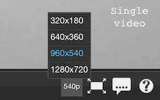
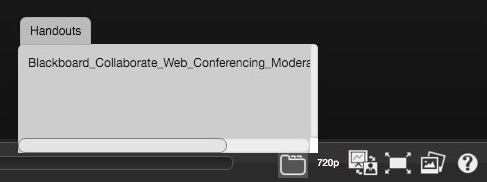
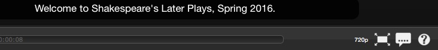
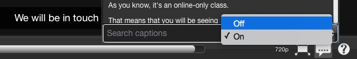
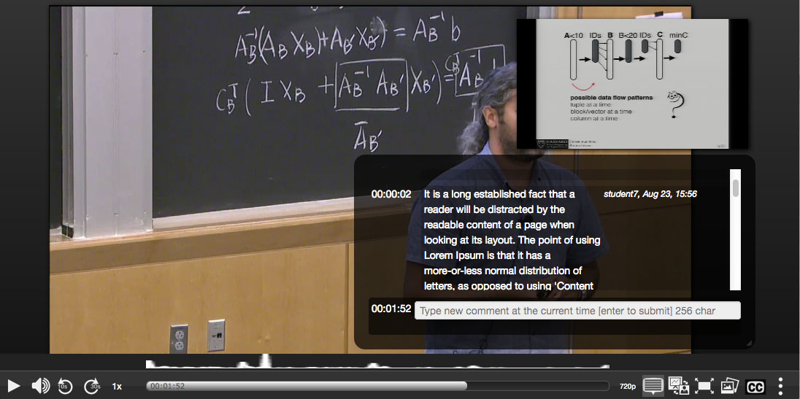

Media Player Help Page for Video On Demand for Live Events
Contents
Basic usage
The player displays two videos - the presenter and the presentation - along with some control options on the lower menu bar. You can begin viewing the lecture by pressing the play button on top of the video window or in the control bar.

Live usage
The player displays the live feed from the classroom. Live player menu contains a limited set of menu options. They include changing resolution, full screen mode, volumne control, and the help button.

Video navigation
You can navigate to any time in the video by clicking the timeline:
We also offer skip controls to help you navigate forward or backwards by set amounts - for instance, to skip back 10 seconds to hear something again that you may have missed.
You can use the slide tool to skip to a specific part of the video based on what content was being presented. Click the tool and then click a slide to jump to that section of the video.

Changing the layout of the player
You can switch between several layouts designed to emphasize the camera or the presentation, depending on the current focus of what's happening in the video. For instance, if the instructor is working on a problem you might want to see the projected chalkboard in as much detail as possible. Switching layouts lets you do this.
You switch layouts with "switch layout" tool:
Viewing lectures in full screen mode
Use the "full screen" tool to maximize the size of the videos in your web browser. Press the escape key to exit, or simply click the control again.
Speeding up / slowing down playback
You can increase/decrease the playback speed via the playback speed control. Click it and you'll get a set of choices. Select "1x" to set playback speed back to normal.

Change video resolution
If you are experiencing stuttering or jerky playback, the video stream may be more than your available bandwidth can handle. To resolve this, try lowering the resolution of the video stream. Click on the player's current resolution displayed in the control bar to see available options.
SINGLESTREAM shows presentation (slides) only with audio. This is half the bandwidth of MULTISTREAM. Not all multiple video publications have the SINGLESTREAM option.
 



Class handouts
A "Class Handout" link appears in the help menu if the publication contains an attached handout. Click the "Class Handout" link to access the handout. PDF files may open in another window instead of downloading.

Captions
A closed caption icon (CC) appears on the control bar if the publication contains closed captions. Click closed caption icon to enable captions.
Click the icon again to close the popup text.

Click the icon and select "Off" to remove captions.

Keyboard shortcuts
Some basic functions of the player can be used with the keyboard.
- ALT+CTRL+P: play-pause
- ALT+CTRL+S: pause
- ALT+CTRL+M: mute
- SPACE: play-pause
- UP: volume up
- DOWN: volume down
- M: mute
- ESCAPE: exit from fullscreen mode
References
This player is open source and based on the "Paella Engage Player" which is published by the Universitat Politecnica de Valencia under the GPL License 3.0. http://paellaengage.upv.es
Student Public Timed Comments
This feature is new and in BETA stage. The "comments" button will appear on certain series for authenticated viewers. Click the button to view the comments interface and to view and post public comments at time points in the lecture. Students can view and reply to each other's comments. Feedback and comments are welcome!
